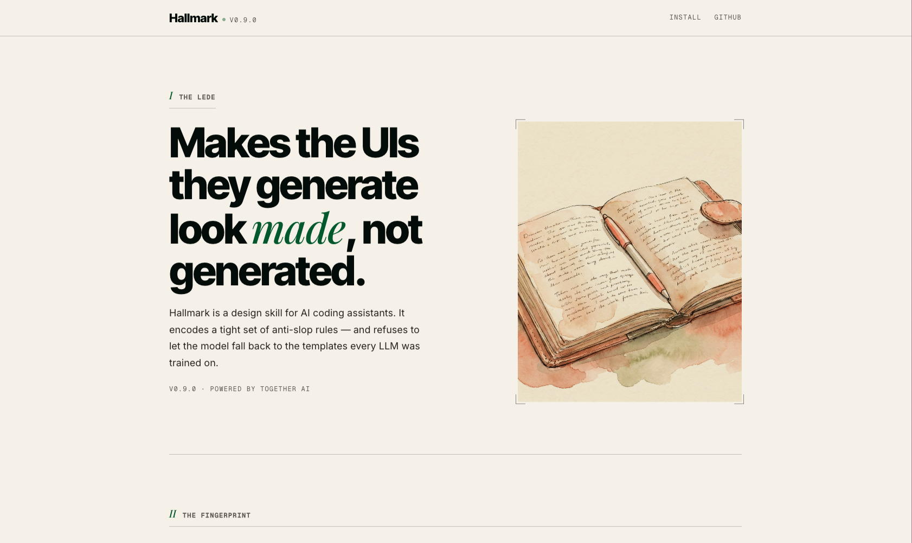
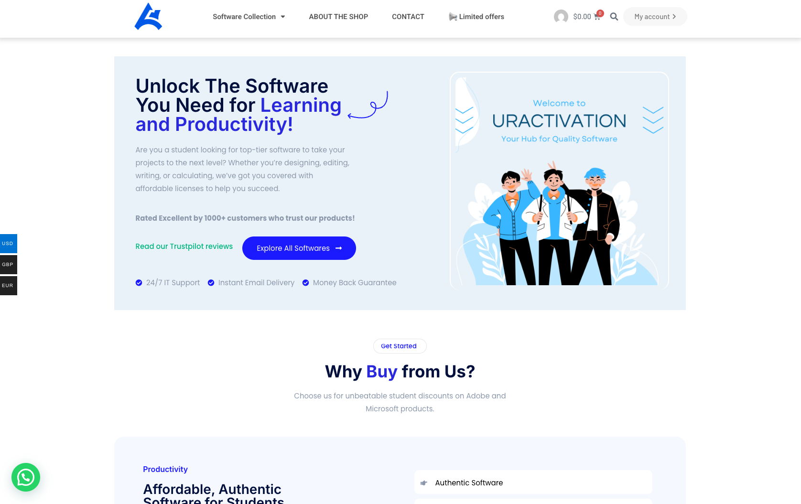
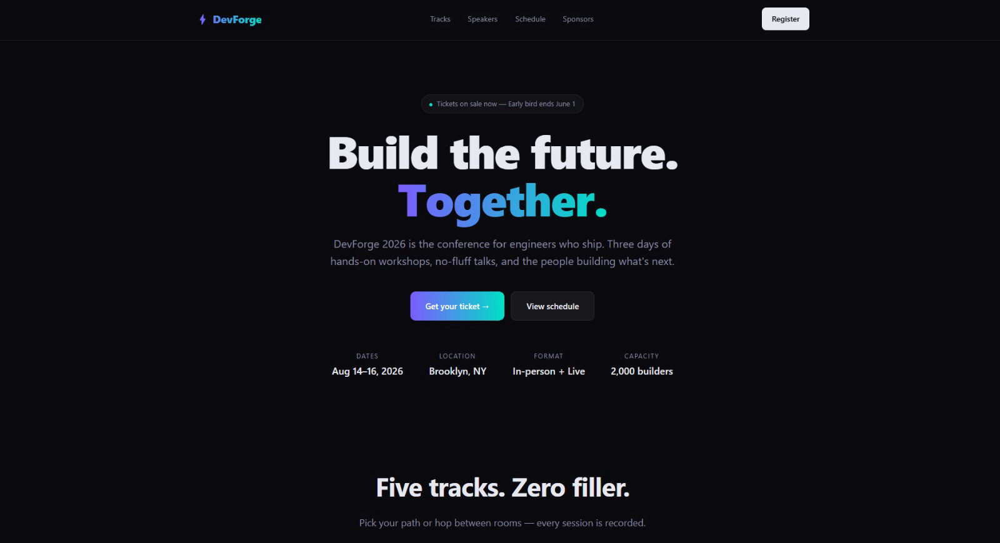
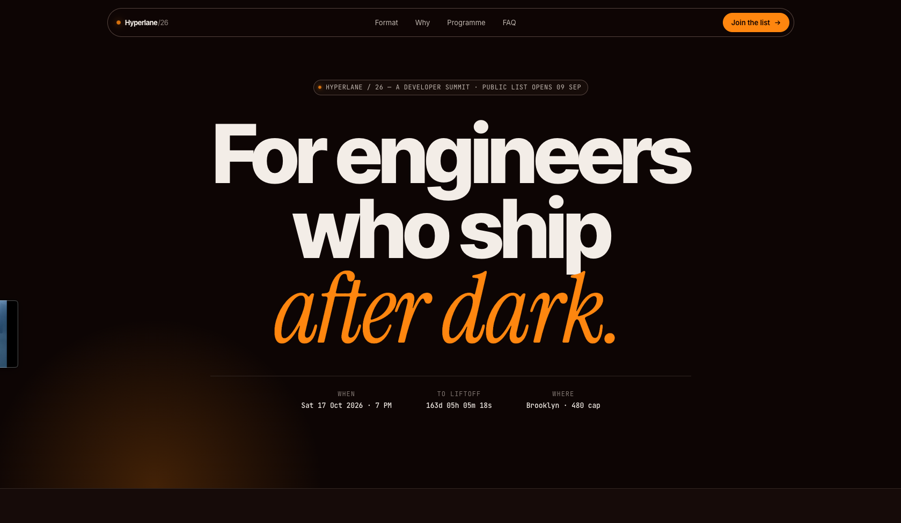

Hallmark has one default behaviour and three explicit verbs. Each reads a different input and returns a
different shape — same opinions, different jobs.
Build (default)
Ask for a page. Get a page that doesn't look generated. Hallmark picks a
macrostructure first, then dresses it — and refuses to repeat the same shape twice.
"Build me a landing page for an indie podcast
platform."↓
Invocation(default) — just
ask
Readsyour brief, project tokens,
framework
Picksmacrostructure → theme →
enrichment
Returnsa working page, stamped,
slop-tested
Refusesrepeating the last 3
macrostructures
Study
Paste a design you admire — a screenshot or a URL. Hallmark reads its
structure, not its pixels, and returns a DNA card you can build against. Or say lock the
DNA to write a portable design.md you can hand to another AI tool. Never copies
pixels. Tighter refusal layer for the portable spec than for the diagnosis.
/hallmark study together.ai · or paste a screenshot↓
Invocationhallmark study <screenshot | URL>
MacrostructureSplit Hero
Hero archetypeH7 Clipped · copy-left
+ product-mock right
Display roleheavy geometric
sans
Body rolesame family · regular
weight
Label rolegrotesque · sentence
case
Paper bandlight · pure white
Accent huecool blue + magenta ·
organic gradient
Rhythmleft-copy · right product card
· overlapping watercolor blobs
Refusesto ID fonts · to copy
pixels
Audit
Point Hallmark at a page. Get a ranked punch list of what's wrong — scored
against the anti-pattern catalogue. No edits. Just the diagnosis.

✗Purple-to-pink gradient hero→Solid surface, single accent
✗Inter as display + body→Pair distinctive display + body
✗Centered everything→Bias the layout, break symmetry
✗Sparkle ✨ emoji as badge→Pick an icon library, or drop it
✗Gradient pill CTA→Solid fill or outline, single hue
Redesign
Same content. Same brand. Different bones. Hallmark throws out the structural
fingerprint and rebuilds with a deliberately different one — new section rhythm, new heading placement,
new component voice.

BeforeAfter Hallmark redesign
04⁄Anti-patterns
Slop, by name.
Five tells the LLM reaches for by default. The Hallmark fix beside each. hallmark audit flags every
one of these on existing code.
01
The purple-gradient hero.
A hero with a background gradient from purple to blue or purple to pink, white
centred text. The single most-recognised AI aesthetic.
Hallmark
Pick a single anchor hue. One accent. No gradient backgrounds on heroes. If
you want warmth, tint the neutrals.
02
Inter as display.
Inter (or Roboto, or Open Sans) used as both display and body, no pairing face. A
one-font page is a template page.
Hallmark
Pair a distinctive display face with a refined body. Two faces minimum, never
the same family doing both jobs.
03
Centred everything.
Headline centred, body centred, button centred, section after section of centred
columns. Symmetry as default.
Hallmark
Bias the layout. Wide left margin, narrow right — or the reverse. Breaking
symmetry once is enough to register intent.
04
The icon-tile feature card.
Rounded rectangle, icon in a coloured square top-left, two-line heading,
three-line copy, optional "Learn more →". The universal template.
Hallmark
If you need feature cards, let them be asymmetric — vary sizes, vary
alignments, pull the icon inline. Or drop the icon and lead with type.
05
The AI nav.
Wordmark hard-left, four inline links centred, CTA button hard-right, sticky on
scroll, hairline border-bottom. The shape every LLM ships.
Hallmark
Pick a nav archetype that matches the page's genre — newspaper masthead,
terminal command bar, edge-aligned minimal. The nav should tell you what kind of site you're on.
05⁄Foundations
Foundations.
Eight rules that hold across every theme. None of them are settings.
Type
Pair a display face with a body face. Never one font doing both jobs.
Colour
OKLCH palettes. One anchor hue. The accent stays under five percent.
Space
A named scale. Multiples of four. No arbitrary 17-pixel paddings.
Motion
Exponential ease-out. Reduced-motion alternative for every animation.
Voice
Distinct register per theme. Never the SaaS-default neutral middle.
Layout
Bias the page. Asymmetric is intentional. Centred everything is a tell.
Hierarchy
Display, body, label. A weight ladder you can read in two seconds.
Restraint
Better nothing than bad something. The strongest fail-state is silence.
06⁄With / Without
Same prompt. Two different outputs.
$ /hallmark build a landing page for a dev event launch.
Sonnet 4.6, no Hallmark

Default reach for the gradient. Generic stat strip, made-up Trustpilot rating, "10× faster" feature card.
Sonnet 4.6 + Hallmark

Marquee Hero · Atelier · italic Fraunces. Real bottle, real grape, real region. No fabricated stats.
07⁄Install
Install.
I Run
$npx skills add nutlope/hallmark
II In
Claude Code~/.claude/skills/hallmark/auto-detected
Cursor.cursor/rules/hallmark.mdcauto-detected
Codex~/.codex/skills/hallmark/auto-detected
III Then
Ask your agent for a UI. hallmark attaches itself.